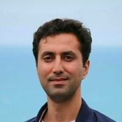

Artificial Intelligence Researcher • Machine Learning Expert • Optimization & Generative AI
I am an Artificial Intelligence researcher and Assistant Professor with expertise in machine learning, deep learning, optimization algorithms, computer vision, and generative AI. My research focuses on metaheuristic optimization, neural networks, diffusion models, reinforcement learning, and multi-objective optimization for intelligent systems.
I have published scientific papers in international journals and conferences, and I actively work on AI-driven projects involving recommendation systems, image generation, latent-space optimization, and medical AI applications.
Email: arefyelghi@topkapi.edu.tr
LinkedIn: Visit LinkedIn Profile
Google Scholar: View Google Scholar
Location: Istanbul, Türkiye